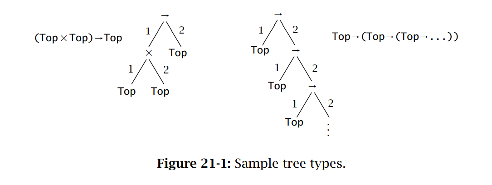
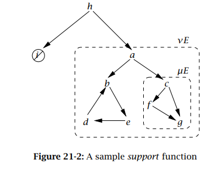

她很丑，还可怜兮兮的。但她身上洋溢着爱。
# 子类型化# 子类型# 包含
考虑如下作用：
( λ r : { x : N a t } . r . x ) { x = 0 , y = 1 } (\lambda r:\{x:Nat\}.r.x)\{x=0,y=1\}
( λ r : { x : N a t } . r . x ) { x = 0 , y = 1 }
按照严格的记录类型定义，这是个非法的表达式。因为传入的参数类型为：{ x : N a t , y : N a t } \{x:Nat,y:Nat\} { x : N a t , y : N a t } { x : N a t } \{x:Nat\} { x : N a t } { x : N a t , y : N a t } \{x:Nat,y:Nat\} { x : N a t , y : N a t } { x : N a t } \{x:Nat\} { x : N a t } 总是安全的 。
进行子类型化的目的是改进类型化规则。我们说 S 是 T 的子类型，记为S < : T S<:T S < : T
子类型关系的类型规则：
Γ ⊢ t : S S < : T Γ ⊢ t : T \frac{\Gamma\vdash t:S\quad S<:T}{\Gamma\vdash t:T}
Γ ⊢ t : T Γ ⊢ t : S S < : T
通过增加这条类型规则，来通过一些类型检查。
# 子类型关系 "<:"
子类型关系显然有传递和自反性。而且对于记录类型，显然有：
{ l i : T i , i ∈ 1.. n + k } < : { l i : T i , i ∈ 1.. n } \{l_i:T_i,i\in1..n+k\}<:\{l_i:T_i,i\in1..n\}
{ l i : T i , i ∈ 1 . . n + k } < : { l i : T i , i ∈ 1 . . n }
此为广度子类型化。
f o r e a c h i S i < : T i { l i : S i , i ∈ 1.. n } < : { l i : T 1 , i ∈ 1.. n } \frac{foreach\;i\quad S_i<:T_i}{\{l_i:S_i,i\in1..n\}<:\{l_i:T_1,i\in1..n\}}
{ l i : S i , i ∈ 1 . . n } < : { l i : T 1 , i ∈ 1 . . n } f o r e a c h i S i < : T i
此为深度子类型化。
{ k j : S j , j ∈ 1.. n } 是 { l i : T i , i ∈ 1.. n } 的一个置换 { k j : S j , j ∈ 1.. n } < : { l i : T i , i ∈ 1.. n } \frac{\{k_j:S_j,j\in1..n\}是\{l_i:T_i,i\in1..n\}的一个置换}{\{k_j:S_j,j\in1..n\}<:\{l_i:T_i,i\in1..n\}}
{ k j : S j , j ∈ 1 . . n } < : { l i : T i , i ∈ 1 . . n } { k j : S j , j ∈ 1 . . n } 是 { l i : T i , i ∈ 1 . . n } 的 一 个 置 换
此为置换子类型化。
T 1 < : S 1 S 2 < : T 2 S 1 → S 2 < : T 1 → T 2 \frac{T_1<:S_1\quad S_2<:T_2}{S_1\rightarrow S_2<:T_1\rightarrow T_2}
S 1 → S 2 < : T 1 → T 2 T 1 < : S 1 S 2 < : T 2
此为高阶语言（允许函数作为参数传递）的子类型化。这个规则比较奇怪，首先考虑一个函数f : S 1 → S 2 f:S_1\rightarrow S_2 f : S 1 → S 2 S 1 S_1 S 1 T 1 T_1 T 1 S 2 S_2 S 2 T 2 T_2 T 2 T 1 → T 2 T_1\rightarrow T_2 T 1 → T 2
S < : T o p S<:Top
S < : T o p
引入 Top 为超类型。T : : = . . . ∣ T o p T::=...|Top T : : = . . . ∣ T o p
# 子类型化和类型化的性质
引理 [逆转定理]
若S < : T 1 → T 2 S<:T_1\rightarrow T_2 S < : T 1 → T 2 S 1 → S 2 S_1\rightarrow S_2 S 1 → S 2 T 1 < : S 1 , S 2 < : T 2 T_1<:S_1,S_2<:T_2 T 1 < : S 1 , S 2 < : T 2
若S < : { l i : T i , i ∈ 1.. n } S<:\{l_i:T_i,i\in1..n\} S < : { l i : T i , i ∈ 1 . . n } { k j : S j , j ∈ 1.. m } \{k_j:S_j,j\in1..m\} { k j : S j , j ∈ 1 . . m } { l i } ⊆ { k i } \{l_i\}\subseteq\{k_i\} { l i } ⊆ { k i } l i : T i , l i : S i l_i:T_i,l_i:S_i l i : T i , l i : S i S i < : T i S_i<:T_i S i < : T i
引理
如果Γ ⊢ λ x : S 1 . s 2 : T 1 → T 2 \Gamma\vdash\lambda x:S_1.s_2:T_1\rightarrow T_2 Γ ⊢ λ x : S 1 . s 2 : T 1 → T 2 T 1 < : S 1 T_1<:S_1 T 1 < : S 1 Γ , x : S 1 ⊢ s 2 : T 2 \Gamma,x:S_1\vdash s_2:T_2 Γ , x : S 1 ⊢ s 2 : T 2
如果Γ ⊢ { k a = s a , a ∈ 1.. m } : { l i : T i , i ∈ 1.. n } \Gamma\vdash \{k_a=s_a,a\in1..m\}:\{l_i:T_i,i\in1..n\} Γ ⊢ { k a = s a , a ∈ 1 . . m } : { l i : T i , i ∈ 1 . . n } { l i } ⊆ { k a } \{l_i\}\subseteq\{k_a\} { l i } ⊆ { k a } Γ ⊢ s a : T i \Gamma\vdash s_a:T_i Γ ⊢ s a : T i
引理 [代换]
如果Γ , x : S ⊢ t : T \Gamma,x:S\vdash t:T Γ , x : S ⊢ t : T Γ ⊢ s : S \Gamma\vdash s:S Γ ⊢ s : S Γ ⊢ [ x ↦ s ] t : T \Gamma\vdash[x\mapsto s]\;t:T Γ ⊢ [ x ↦ s ] t : T
定理 [保持]
如果Γ ⊢ t : T \Gamma\vdash t:T Γ ⊢ t : T t → t ′ t\rightarrow t' t → t ′ Γ ⊢ t ′ : T \Gamma\vdash t':T Γ ⊢ t ′ : T
# Top 类型和 Bottom 类型B o t < : T e r r o r : B o t Bot<:T\\
error:Bot
B o t < : T e r r o r : B o t
显然把 error 设置成 Bot 就不错，它可以在任何上下文出现。但这样的类型很流氓，需要慎重。
# 子类型化及其他特征# 归属（Ascription）和强制转型（Casting）
之前介绍过归属算子t a s T t\;as\;T t a s T
# 变式类型 & 列表类型# 引用S < : T T < : S R e f S < : R e f T \frac{S<:T\quad T<:S}{Ref\;S<:Ref\;T}
R e f S < : R e f T S < : T T < : S
由于引用类型需要同时支持读! ! ! : = := : = S < : T S<:T S < : T T < : S T<:S T < : S
S < : T T < : S A r r a y S < : A r r a y T \frac{S<:T\quad T<:S}{Array\;S<:Array\;T}
A r r a y S < : A r r a y T S < : T T < : S
但是 Java 中却允许协变子类型化规则：
S < : T A r r a y S < : A r r a y T \frac{S<:T}{Array\;S<:Array\;T}
A r r a y S < : A r r a y T S < : T
最初是出于多态的目的引入的规则，但由于它严重地影响了数组的性能（因为每次赋值都需要动态检查类型），被认为是语言设计的一个缺陷。
然而，我们可以引入类型构造子S o u r c e T , S i n k T Source\;T,Sink\;T S o u r c e T , S i n k T
Γ ∣ Σ ⊢ t 1 : S o u r c e T 1 Γ ∣ Σ ⊢ ! t 1 : T 1 Γ ∣ Σ ⊢ t 1 : S i n k T 1 Γ ∣ Σ ⊢ t 2 : T 1 Γ ∣ Σ ⊢ t 1 : = t 2 : U n i t \frac{\Gamma|\Sigma\vdash t_1:Source\;T_1}{\Gamma|\Sigma\vdash !t_1:T_1}\\
\frac{\Gamma|\Sigma\vdash t_1:Sink\;T_1\quad \Gamma|\Sigma\vdash t_2:T_1}{\Gamma|\Sigma\vdash t_1:=t_2:Unit}
Γ ∣ Σ ⊢ ! t 1 : T 1 Γ ∣ Σ ⊢ t 1 : S o u r c e T 1 Γ ∣ Σ ⊢ t 1 : = t 2 : U n i t Γ ∣ Σ ⊢ t 1 : S i n k T 1 Γ ∣ Σ ⊢ t 2 : T 1
而这两个构造子都是协变的：
S < : T S o u r c e S < : S o u r c e T S < : T S i n k S < : S i n k T \frac{S<:T}{Source\;S<:Source\;T}\\
\frac{S<:T}{Sink\;S<:Sink\;T}
S o u r c e S < : S o u r c e T S < : T S i n k S < : S i n k T S < : T
且
R e f T < : S o u r c e T R e f T < : S i n k T Ref\;T<:Source\;T\\
Ref\;T<:Sink\;T
R e f T < : S o u r c e T R e f T < : S i n k T
# 子类型化的强制语义
考虑下面这个问题。首先，Integer 应该为 Double 的一个子类型，因为所有用 double 的运算都可以替换为 integer。数学上讲，这就意味着整数集合是实数集合的子集，但是在计算机存储中，整型和浮点数的存储方式完全不一样。那就不能直接简单地将 double 替换为 integer。
我们可以采用子类型化的强制语义来解决这个问题。这种语义可以表示为一个函数，它将项从该语言的形式转化为一个更低级的不含子类型化规则的语言形式。我们选择含记录和 Unit 类型的纯简单类型 lambda 演算作为目标低级语言。
通常，编译过程包含了三个翻译函数：一个作用于类型，一个用来子类型化，一个用来类型化。用[ [ − ] ] [[-]] [ [ − ] ]
[ [ T o p ] ] = U n i t [ [ T 1 → T 2 ] ] = [ [ T 1 ] ] → [ [ T 2 ] ] [ [ { l i : T 1 , i ∈ 1.. n } ] ] = { l i : [ [ T i ] ] , i ∈ 1.. n } \begin{aligned}
& [[Top]]=Unit\\
& [[T_1 \rightarrow T_2]]=[[T_1]]\rightarrow [[T_2]] \\
& [[\{l_i:T_1,i\in 1..n\}]]=\{l_i:[[T_i]],i\in 1..n\}
\end{aligned}
[ [ T o p ] ] = U n i t [ [ T 1 → T 2 ] ] = [ [ T 1 ] ] → [ [ T 2 ] ] [ [ { l i : T 1 , i ∈ 1 . . n } ] ] = { l i : [ [ T i ] ] , i ∈ 1 . . n }
定义符号C : : S < : T C::S<:T C : : S < : T
[ [ T < : T ] ] = λ x : [ [ T ] ] . x [ [ S < : T o p ] ] = λ x : [ [ S ] ] . u n i t [ [ C 1 : : S < : U C 2 : : U < : T S < : T ] ] = λ x : [ [ S ] ] . [ [ C 2 ] ] ( [ [ C 1 ] ] x ) [ [ C 1 : : T 1 < : S 1 C 2 : : S 2 < : T 2 S 1 → S 2 < : T 1 → T 2 ] ] = λ f : [ [ S 1 → S 2 ] ] . λ x : [ [ T 1 ] ] . [ [ C 2 ] ] ( f [ [ C 1 ] ] x ) [ [ { l i : T i , i ∈ 1.. n + k } < : { l i : T i , i ∈ 1.. n } ] ] = λ r : { l i : [ [ T i ] ] , i ∈ 1.. n + k } . { l i = r . l i , i ∈ 1.. n } [ [ f o r e a c h i C i : : S i < : T i { l i : S i } < : { l i < : T i } ] ] = λ r : { l i : [ [ S i ] ] } . { l i = [ [ C i ] ] ( r . l i ) } [ [ { k j : S j } 是 { l i : T i } 的置换 { k j : S j } < : { l i : T i } ] ] = λ r : { k j : [ [ S j ] ] } . { l i = r . l i } [[\frac{}{T<:T}]]=\lambda x:[[T]].x\\
[[\frac{}{S<:Top}]]=\lambda x:[[S]].unit\\
[[\frac{C_1::S<:U\quad C_2::U<:T}{S<:T}]]=\lambda x:[[S]].[[C_2]]([[C_1]]x)\\
[[\frac{C_1::T_1<:S_1\quad C_2::S_2<:T_2}{S_1\rightarrow S_2<:T_1\rightarrow T_2}]]=\lambda f:[[S_1\rightarrow S_2]].\lambda x:[[T_1]].[[C_2]](f[[C_1]]x)\\
[[\frac{}{\{l_i:T_i,i\in1..n+k\}<:\{l_i:T_i,i\in1..n\}}]]=\lambda r:\{l_i:[[T_i]],i\in1..n+k\}.\{l_i=r.l_i,i\in1..n\}\\
[[\frac{foreach\;i\quad C_i::S_i<:T_i}{\{l_i:S_i\}<:\{l_i<:T_i\}}]]=\lambda r:\{l_i:[[S_i]]\}.\{l_i=[[C_i]](r.l_i)\}\\
[[\frac{\{k_j:S_j\}是\{l_i:T_i\}的置换}{\{k_j:S_j\}<:\{l_i:T_i\}}]]=\lambda r:\{k_j:[[S_j]]\}.\{l_i=r.l_i\}
[ [ T < : T ] ] = λ x : [ [ T ] ] . x [ [ S < : T o p ] ] = λ x : [ [ S ] ] . u n i t [ [ S < : T C 1 : : S < : U C 2 : : U < : T ] ] = λ x : [ [ S ] ] . [ [ C 2 ] ] ( [ [ C 1 ] ] x ) [ [ S 1 → S 2 < : T 1 → T 2 C 1 : : T 1 < : S 1 C 2 : : S 2 < : T 2 ] ] = λ f : [ [ S 1 → S 2 ] ] . λ x : [ [ T 1 ] ] . [ [ C 2 ] ] ( f [ [ C 1 ] ] x ) [ [ { l i : T i , i ∈ 1 . . n + k } < : { l i : T i , i ∈ 1 . . n } ] ] = λ r : { l i : [ [ T i ] ] , i ∈ 1 . . n + k } . { l i = r . l i , i ∈ 1 . . n } [ [ { l i : S i } < : { l i < : T i } f o r e a c h i C i : : S i < : T i ] ] = λ r : { l i : [ [ S i ] ] } . { l i = [ [ C i ] ] ( r . l i ) } [ [ { k j : S j } < : { l i : T i } { k j : S j } 是 { l i : T i } 的 置 换 ] ] = λ r : { k j : [ [ S j ] ] } . { l i = r . l i }
这翻译其实就是把所有的子类型化规则用 lambda 演算替换掉。从而得到不含有子类型化的类型。譬如
[ [ I n t < : D o u b l e ] ] = λ x . f ( x ) : I n t → D o u b l e [[Int<:Double]]=\lambda x.f(x):Int\rightarrow Double
[ [ I n t < : D o u b l e ] ] = λ x . f ( x ) : I n t → D o u b l e
引理，如果C : : S < : T C::S<:T C : : S < : T ⊢ [ [ C ] ] : [ [ S ] ] → [ [ T ] ] \vdash [[C]]:[[S]]\rightarrow [[T]] ⊢ [ [ C ] ] : [ [ S ] ] → [ [ T ] ]
也就是说，这个翻译函数对子类型化S < : T S<:T S < : T [ [ S ] ] → [ [ T ] ] [[S]]\rightarrow [[T]] [ [ S ] ] → [ [ T ] ]
# 吻合性
我们需要对子类型的翻译函数给出语义解释（可以理解为，给出上面推导规则配套的公理），例如：
[ [ B o o l < : I n t ] ] = λ b : B o o l . i f b t h e n 1 e l s e 0 [ [ B o o l < : F l o a t ] ] = λ b : B o o l . i f b t h e n 1.0 e l s e 0.0 [[Bool<:Int]]=\lambda b:Bool.if\;b\;then\;1\;else\;0\\
[[Bool<:Float]]=\lambda b:Bool.if\;b\;then\;1.0\;else\;0.0
[ [ B o o l < : I n t ] ] = λ b : B o o l . i f b t h e n 1 e l s e 0 [ [ B o o l < : F l o a t ] ] = λ b : B o o l . i f b t h e n 1 . 0 e l s e 0 . 0
这是一种强制类型转换的语义。但是会有歧义，譬如在求值：
( λ x : S t r i n g . x ) t r u e (\lambda x:String.x)\;true
( λ x : S t r i n g . x ) t r u e
时，我们可以把 true 转为 Int 再转为 String，得到求值结果 “1”，或者把 true 转为 Float 再转为 String，得到求值结果为 “1.0”。
解决这个问题是在类型翻译函数的定义中附加一个要求，即吻合性 ：
对结论都为Γ ⊢ t : T \Gamma\vdash t:T Γ ⊢ t : T D 1 , D 2 D_1,D_2 D 1 , D 2 [ [ D 1 ] ] , [ [ D 2 ] ] [[D_1]],[[D_2]] [ [ D 1 ] ] , [ [ D 2 ] ]
例如为了解决上面那个例子问题，就可以改变[ [ F l o a t < : S t r i n g ] ] [[Float<:String]] [ [ F l o a t < : S t r i n g ] ] [ [ F l o a t < : S t r i n g ] ] 1.0 = " 1 " [[Float<:String]]\;1.0="1" [ [ F l o a t < : S t r i n g ] ] 1 . 0 = " 1 "
# 交叉类型和联合类型
交叉算子：
S < : T 1 S < : T 2 S < : T 1 ∧ T 2 T 1 ∧ T 2 < : T 1 T 1 ∧ T 2 < : T 2 S → T 1 ∧ S → T 2 < : S → ( T 1 ∧ T 2 ) \frac{S<:T_1\quad S<:T_2}{S<:T_1\wedge T_2}\\
T_1\wedge T_2<:T_1\\
T_1\wedge T_2<:T_2\\
S\rightarrow T_1\wedge S\rightarrow T_2<:S\rightarrow(T_1\wedge T_2)
S < : T 1 ∧ T 2 S < : T 1 S < : T 2 T 1 ∧ T 2 < : T 1 T 1 ∧ T 2 < : T 2 S → T 1 ∧ S → T 2 < : S → ( T 1 ∧ T 2 )
这告诉我们，类型T 1 ∧ T 2 T_1\wedge T_2 T 1 ∧ T 2 T 1 T_1 T 1 T 2 T_2 T 2
例如我们可以给加算子赋予类型( N a t → N a t → N a t ) ∧ ( F l o a t → F l o a t → F l o a t ) (Nat\rightarrow Nat\rightarrow Nat)\wedge(Float\rightarrow Float\rightarrow Float) ( N a t → N a t → N a t ) ∧ ( F l o a t → F l o a t → F l o a t )
然而交叉类型的规则会给语言设计者带来难题，更多时候使用一种证明更为容易的 “精炼类型”。
联合算子T 1 ∨ T 2 T_1\vee T_2 T 1 ∨ T 2
# 子类型的元理论
我们增加一个规则，把之前深度、广度、置换子类型化规则合一：
{ l i , i ∈ 1.. n } ⊆ { k j , j ∈ 1.. m } l i = k j ⇒ S j < : T i { k j : S j , j ∈ 1.. m } < : { l i : T i , i ∈ 1.. n } \frac{\{l_i,i\in1..n\}\subseteq\{k_j,j\in1..m\}\quad l_i=k_j\Rightarrow S_j<:T_i}{\{k_j:S_j,j\in1..m\}<:\{l_i:T_i,i\in1..n\}}
{ k j : S j , j ∈ 1 . . m } < : { l i : T i , i ∈ 1 . . n } { l i , i ∈ 1 . . n } ⊆ { k j , j ∈ 1 . . m } l i = k j ⇒ S j < : T i
有了这个规则，我们便无需再声明S < : S S<:S S < : S S < : T T < : U S < : U \frac{S<:T\quad T<:U}{S<:U} S < : U S < : T T < : U
于是我们可以写一个小的程序来判断项的类型：
s u b t y p e : : T → T → B o o l subtype::T\rightarrow T\rightarrow Bool s u b t y p e : : T → T → B o o l
subtype S T = if T == Top then true
else if S = S 1 → S 2 S=S_1\rightarrow S_2 S = S 1 → S 2 and T = T 1 → T 2 T=T_1\rightarrow T_2 T = T 1 → T 2
then subtype T 1 S 1 ∧ T_1\;S_1\wedge T 1 S 1 ∧ subtype S 2 T 2 S_2\;T_2 S 2 T 2
else if S 和 T 满足上面那个规则 then True else False
# 算法类型化
根据我们之前给出的类型推导规则，共一个结论会有很多的推导式。譬如：
. . . Γ ⊢ s : S . . . S < : U Γ ⊢ s : U . . . U < : T Γ ⊢ s : T \frac{\frac{\frac{...}{\Gamma\vdash s:S}\quad \frac{...}{S<:U}}{\Gamma\vdash s:U}\quad\frac{...}{U<:T}}{\Gamma\vdash s:T}
Γ ⊢ s : T Γ ⊢ s : U Γ ⊢ s : S . . . S < : U . . . U < : T . . .
可以改写为：
. . . Γ ⊢ s : S . . . S < : U . . . U < : T S < : T Γ ⊢ s : T \frac{\frac{...}{\Gamma\vdash s:S}\quad\frac{\frac{...}{S<:U}\quad\frac{...}{U<:T}}{S<:T}}{\Gamma\vdash s:T}
Γ ⊢ s : T Γ ⊢ s : S . . . S < : T S < : U . . . U < : T . . .
这不是很好便于写程序生成推导。于是，类似之前的子类型，我们需要在保持推导能力的前提下 ，对推导规则进行压缩。于是就有了算法类型化：
算法类型化：
x : T ∈ Γ Γ ⊢ x : T Γ , x : T 1 ⊢ t 2 : T 2 Γ ⊢ λ x : T 1 . t 2 : T 1 → T 2 Γ ⊢ t 1 : T 1 → T 2 ′ Γ ⊢ t 2 : T 2 Γ ⊢ T 2 < : T 1 Γ ⊢ t 1 t 2 : T 2 ′ f o r e a c h i Γ ⊢ t i : T i Γ ⊢ { l i = t i , i ∈ 1.. n } : { l i : T i , i ∈ 1.. n } Γ ⊢ t 1 : { l i : T i , i ∈ 1.. n } Γ ⊢ t i . l i : T i \frac{x:T\in\Gamma}{\Gamma\vdash x:T}\\
\frac{\Gamma,x:T_1\vdash t_2:T_2}{\Gamma\vdash\lambda x:T_1.t_2:T_1\rightarrow T_2}\\
\frac{\Gamma\vdash t_1:T_1\rightarrow T_2'\quad \Gamma\vdash t_2:T_2\quad\Gamma\vdash T_2<:T_1}{\Gamma\vdash t_1\;t_2:T_2'}\\
\frac{foreach\;i\quad\Gamma\vdash t_i:T_i}{\Gamma\vdash\{l_i=t_i,i\in1..n\}:\{l_i:T_i,i\in1..n\}}\\
\frac{\Gamma\vdash t_1:\{l_i:T_i,i\in1..n\}}{\Gamma\vdash t_i.l_i:T_i}
Γ ⊢ x : T x : T ∈ Γ Γ ⊢ λ x : T 1 . t 2 : T 1 → T 2 Γ , x : T 1 ⊢ t 2 : T 2 Γ ⊢ t 1 t 2 : T 2 ′ Γ ⊢ t 1 : T 1 → T 2 ′ Γ ⊢ t 2 : T 2 Γ ⊢ T 2 < : T 1 Γ ⊢ { l i = t i , i ∈ 1 . . n } : { l i : T i , i ∈ 1 . . n } f o r e a c h i Γ ⊢ t i : T i Γ ⊢ t i . l i : T i Γ ⊢ t 1 : { l i : T i , i ∈ 1 . . n }
这套系统其实等价于之前声明的一大堆子类型规则，它可靠且完备。
算法类型化种，也可以引入 Top 合 Bot。
# 合类型和交类型
[定义] 对类型 J 和类型 S，T，如果有S < : J , T < : J S<:J,T<:J S < : J , T < : J S < : U , T < : U S<:U,T<:U S < : U , T < : U J < : U J<:U J < : U 合类型 。记为S ∨ T = J S\vee T=J S ∨ T = J M < : S , M < : T M<:S,M<:T M < : S , M < : T L < : S , L < : T L<:S,L<:T L < : S , L < : T L < : T L<:T L < : T L < : M L<:M L < : M S ∧ T = M S\wedge T=M S ∧ T = M
这有啥用呢，其实之前有要求：
Γ ⊢ t 1 : B o o l Γ ⊢ t 2 : T Γ ⊢ t 3 : T Γ ⊢ i f t 1 t h e n t 2 e l s e t 3 : T \frac{\Gamma\vdash t_1:Bool\quad\Gamma \vdash t_2:T\quad\Gamma\vdash t_3:T}{\Gamma\vdash if\;t_1\;then\;t_2\;else\;t_3:T}
Γ ⊢ i f t 1 t h e n t 2 e l s e t 3 : T Γ ⊢ t 1 : B o o l Γ ⊢ t 2 : T Γ ⊢ t 3 : T
if 的 then 和 else 必须类型相同。但是考虑下面这个情况：
i f t t h e n { x = t r u e , y = 1 } e l s e { x = f a l s e , z = " c " } if\;t\;then\;\{x=true,y=1\}\;else\;\{x=false,z="c"\}
i f t t h e n { x = t r u e , y = 1 } e l s e { x = f a l s e , z = " c " }
虽然 then 和 else 后类型不同，但是它们有个合类型{ x : B o o l } \{x:Bool\} { x : B o o l } { x : B o o l } \{x:Bool\} { x : B o o l }
# 递归类型# 递归类型简介# 实例# 整型列表
整型列表的递归定义（变式类型）：
N a t L i s t = < n i l : U n i t , c o n s : { N a t , N a t L i s t } > NatList=<nil:Unit,cons:\{Nat,NatList\}>
N a t L i s t = < n i l : U n i t , c o n s : { N a t , N a t L i s t } >
对类型引入一个明确的递归操作符μ \mu μ
N a t L i s t = μ X . < n i l : U n i t , c o n s : { N a t , X } > NatList=\mu X.<nil:Unit,cons:\{Nat,X\}>
N a t L i s t = μ X . < n i l : U n i t , c o n s : { N a t , X } >
读作 “将N a t L i s t NatList N a t L i s t X = < n i l : U n i t , c o n s : { N a t , X } X=<nil:Unit,cons:\{Nat,X\} X = < n i l : U n i t , c o n s : { N a t , X }
相关算子：
n i l = < n i l = u n i t > a s N a t L i s t c o n s = λ n : N a t . λ l : N a t L i s t . < c o n s = { n , l } > a s N a t L i s t nil=<nil=unit>\;as\;NatList\\
cons=\lambda n:Nat.\lambda l:NatList.<cons=\{n,l\}>\;as\;NatList
n i l = < n i l = u n i t > a s N a t L i s t c o n s = λ n : N a t . λ l : N a t L i s t . < c o n s = { n , l } > a s N a t L i s t
n i l nil n i l c o n s : N a t → N a t L i s t → N a t L i s t cons:Nat\rightarrow NatList\rightarrow NatList c o n s : N a t → N a t L i s t → N a t L i s t
i s n i l = λ l : N a t L i s t . c a s e l o f < n i l = u > ⇒ t r u e ∣ < c o n s = p > ⇒ f a l s e h d = λ l : N a t L i s t . c a s e l o f < n i l = u > ⇒ 0 ∣ < c o n s = p > ⇒ p . 1 t l = λ l : N a t L i s t . c a s e l o f < n i l = u > ⇒ l ∣ < c o n s = p > ⇒ p . 2 isnil=\lambda l:NatList.case\;l\;of\\
<nil=u>\Rightarrow true\\
|<cons=p>\Rightarrow false\\
hd=\lambda l:NatList.case\;l\;of\\
<nil=u>\Rightarrow 0\\
|<cons=p>\Rightarrow p.1\\
tl=\lambda l:NatList.case\;l\;of\\
<nil=u>\Rightarrow l\\
|<cons=p>\Rightarrow p.2
i s n i l = λ l : N a t L i s t . c a s e l o f < n i l = u > ⇒ t r u e ∣ < c o n s = p > ⇒ f a l s e h d = λ l : N a t L i s t . c a s e l o f < n i l = u > ⇒ 0 ∣ < c o n s = p > ⇒ p . 1 t l = λ l : N a t L i s t . c a s e l o f < n i l = u > ⇒ l ∣ < c o n s = p > ⇒ p . 2
$isnil:NatList\Rightarrow Bool$可以判列表是否为空。
$hd:NatList\Rightarrow Nat$表示返回列表的头元素
$tl:NatList\Rightarrow NatList$表示删除列表的头元素。
# 饥饿函数
一个有用的饥饿函数的变形就是流类型：
S t r e a m = μ A . U n i t → { N a t , A } Stream=\mu A.Unit\rightarrow\{Nat,A\}
S t r e a m = μ A . U n i t → { N a t , A }
它接受一个 Unit 类型，然后返回一个数字和一个新的流的序对。
有用的算子：
h d = λ s : S t r e a m . ( s u n i t ) . 1 t l = λ s : S t r e a m . ( s u n i t ) . 2 hd=\lambda s:Stream.(s\;unit).1\\
tl=\lambda s:Stream.(s\;unit).2
h d = λ s : S t r e a m . ( s u n i t ) . 1 t l = λ s : S t r e a m . ( s u n i t ) . 2
显然一个是返回读的值，一个是返回新的流。
利用不动点算子定义流：
u p f r o m 0 = f i x ( λ f : N a t → S t r e a m . λ n : N a t . λ _ : U n i t . { n , f ( s u c c n ) } ) 0 upfrom0=fix\;(\lambda f:Nat\rightarrow Stream.\lambda n:Nat.\lambda\_:Unit.\{n,f\;(succ\;n)\})\;0
u p f r o m 0 = f i x ( λ f : N a t → S t r e a m . λ n : N a t . λ _ : U n i t . { n , f ( s u c c n ) } ) 0
解释下，中间括号里：
c = λ f : N a t → S t r e a m . λ n : N a t . λ _ : U n i t . { n , f ( s u c c n ) } c : N a t → S t r e a m → N a t → U n i t → { N a t , S t r e a m } = ( N a t → S t r e a m ) → N a t → S t r e a m c=\lambda f:Nat\rightarrow Stream.\lambda n:Nat.\lambda\_:Unit.\{n,f\;(succ\;n)\}\\
c:Nat\rightarrow Stream\rightarrow Nat\rightarrow Unit\rightarrow \{Nat,Stream\}\\
=(Nat\rightarrow Stream)\rightarrow Nat\rightarrow Stream
c = λ f : N a t → S t r e a m . λ n : N a t . λ _ : U n i t . { n , f ( s u c c n ) } c : N a t → S t r e a m → N a t → U n i t → { N a t , S t r e a m } = ( N a t → S t r e a m ) → N a t → S t r e a m
于是f i x c : N a t → S t r e a m fix\;c:Nat\rightarrow Stream f i x c : N a t → S t r e a m
c = λ f . λ n . ( c ′ : S t r e a m ) c ′ = λ _ : U n i t . { n , f ( s u c c n ) } : S t r e a m c=\lambda f.\lambda n.(c':Stream)\\
c'=\lambda\_:Unit.\{n,f\;(succ\;n)\}:Stream
c = λ f . λ n . ( c ′ : S t r e a m ) c ′ = λ _ : U n i t . { n , f ( s u c c n ) } : S t r e a m
于是有：
h d ( t l ( t l ( t l u p f r o m 0 ) ) ) = 3 : N a t hd\;(tl\;(tl\;(tl\;upfrom0)))=3:Nat
h d ( t l ( t l ( t l u p f r o m 0 ) ) ) = 3 : N a t
流的一个变型：
P r o c e s s = μ A . N a t → { N a t , A } Process=\mu A.Nat\rightarrow\{Nat,A\}
P r o c e s s = μ A . N a t → { N a t , A }
这是进程 类型，譬如：
p = f i x ( λ f : N a t → P r o c e s s . λ a c c : N a t . λ n : N a t . l e t n e w a c c = p l u s a c c n i n { n e w a c c , f n e w a c c } 0 ) : P r o c e s s p=fix\;(\lambda f:Nat\rightarrow Process.\lambda acc:Nat.\lambda n:Nat.\\
let\;newacc\;=\;plus\;acc\;n\;in\{newacc,f\;newacc\}\\
0
):Process
p = f i x ( λ f : N a t → P r o c e s s . λ a c c : N a t . λ n : N a t . l e t n e w a c c = p l u s a c c n i n { n e w a c c , f n e w a c c } 0 ) : P r o c e s s
于是有：
( p 1 ) . 1 → 1 ( p 1 2 ) . 1 → 3 ( p 1 2 3 ) . 1 → 6 . . . . (p\;1).1\rightarrow 1\\
(p\;1\;2).1\rightarrow3\\
(p\;1\;2\;3).1\rightarrow6\;\\
....
( p 1 ) . 1 → 1 ( p 1 2 ) . 1 → 3 ( p 1 2 3 ) . 1 → 6 . . . .
是个累加器。
# 对象
一个计数器对象：
C o u n t e r = μ C . { g e t : N a t , i n c : U n i t → C } Counter=\mu C.\{get:Nat,inc:Unit\rightarrow C\}
C o u n t e r = μ C . { g e t : N a t , i n c : U n i t → C }
构造对象：
c = f i x ( λ f : { x : N a t } → C o u n t e r . λ s : { x : N a t } . { g e t = s . x , i n c = λ _ : U n i t . f { x = s u c c ( s . x ) } } ) { x = 0 } c=fix\;(\lambda f:\{x:Nat\}\rightarrow Counter.\lambda s:\{x:Nat\}.\\
\{get=s.x,\\
inc=\lambda\_:Unit.f\;\{x=succ(s.x)\}\\
\})\;\{x=0\}
c = f i x ( λ f : { x : N a t } → C o u n t e r . λ s : { x : N a t } . { g e t = s . x , i n c = λ _ : U n i t . f { x = s u c c ( s . x ) } } ) { x = 0 }
于是有：
c 1 = c . i n c u n i t c 2 = c . i n c u n i t c 2. g e t → 2 : N a t c1=c.inc\;unit\\
c2=c.inc\;unit\\
c2.get\rightarrow 2:Nat
c 1 = c . i n c u n i t c 2 = c . i n c u n i t c 2 . g e t → 2 : N a t
# 递归类型的递归值
在之前无类型 lambda 演算时，解递归的不动点算子我就有疑问，它不是可类型化的。但现在，我们可以利用递归类型定义它：
f i x = λ f : T → T . ( λ x : ( μ A . A → T ) . f ( x x ) ) ( λ x : ( μ A → T ) . f ( x x ) ) f i x : ( T → T ) → T fix=\lambda f:T\rightarrow T.(\lambda x:(\mu A.A\rightarrow T).f\;(x\;x))(\lambda x:(\mu A\rightarrow T).f\;(x\;x))\\
fix:(T\rightarrow T)\rightarrow T
f i x = λ f : T → T . ( λ x : ( μ A . A → T ) . f ( x x ) ) ( λ x : ( μ A → T ) . f ( x x ) ) f i x : ( T → T ) → T
即x : μ A . A → T , x x : T x:\mu A.A\rightarrow T,x\;x:T x : μ A . A → T , x x : T
# 递归类型将无类型 λ 演算以一种良类型的方式嵌入含递归类型的静态类型化语言
考虑类型：D = μ X . X → X D=\mu X.X\rightarrow X D = μ X . X → X D = D → D D=D\rightarrow D D = D → D
l a m = λ f : D → D . f a s D l a m : ( D → D ) → D = D → D = D lam=\lambda f:D\rightarrow D.f\;as\;D\\
lam:(D\rightarrow D)\rightarrow D=D\rightarrow D=D
l a m = λ f : D → D . f a s D l a m : ( D → D ) → D = D → D = D
定义函数：a p = λ f : D . λ a : D . f a ap=\lambda f:D.\lambda a:D.f\;a a p = λ f : D . λ a : D . f a
于是我们可以把无类型 lambda 演算都整成 D 类型，以最简单的只含变量，抽象，作用的 lambda 演算为例：
x ∗ = x ( λ x . M ) ∗ = l a m ( λ x : D . M ∗ ) ( M N ) ∗ = a p M ∗ N ∗ x^*=x\\
(\lambda x.M)^*=lam\;(\lambda x:D.M^*)\\
(M\;N)^*=ap\;M^*\;N^*
x ∗ = x ( λ x . M ) ∗ = l a m ( λ x : D . M ∗ ) ( M N ) ∗ = a p M ∗ N ∗
我们可以认为，无类型 lambda 演算中任意一项M M M M ∗ : D M^*:D M ∗ : D
特别地，对于无类型 lambda 演算的不动点算子：
f i x = λ f . ( λ x . f ( λ y . x x y ) ) ( λ x . f ( λ y . x x y ) ) ⇒ f i x ∗ = l a m ( λ f : D a p ( l a m ( λ x : D . a p f ( a p x x ) ) ) ( l a m ( λ x : D . a p f ( a p x x ) ) ) ) ; f i x ∗ : D fix=\lambda f.(\lambda x.f\;(\lambda y.x\;x\;y))(\lambda x.f\;(\lambda y.x\;x\;y))\\
\Rightarrow\\
fix^*=lam\;(\lambda f:D\\
ap\;(lam\;(\lambda x:D.ap\;f\;(ap\;x\;x)))\\
(lam\;(\lambda x:D.ap\;f\;(ap\;x\;x)))\\
);\\
fix^*:D
f i x = λ f . ( λ x . f ( λ y . x x y ) ) ( λ x . f ( λ y . x x y ) ) ⇒ f i x ∗ = l a m ( λ f : D a p ( l a m ( λ x : D . a p f ( a p x x ) ) ) ( l a m ( λ x : D . a p f ( a p x x ) ) ) ) ; f i x ∗ : D
纯 λ 演算的嵌入可扩展为含一些特征（如数字）。此时我们可以重写 D：
D = μ X . < n a t : N a t , f n : X → X > l a m = λ f : D → D . < f n = f > a s D ; a p = λ f : D . λ a : D . c a s e f o f < n a t = n > ⇒ d i v e r g e D u n i t ∣ < f n = f > ⇒ f a ; D=\mu X.<nat:Nat,fn:X\rightarrow X>\\
lam=\lambda f:D\rightarrow D.<fn=f>\;as\;D;\\
ap=\lambda f:D.\lambda a:D.\\
case\;f\;of\\
<nat=n>\Rightarrow diverge_D\;unit\\
|<fn=f>\Rightarrow f\;a;
D = μ X . < n a t : N a t , f n : X → X > l a m = λ f : D → D . < f n = f > a s D ; a p = λ f : D . λ a : D . c a s e f o f < n a t = n > ⇒ d i v e r g e D u n i t ∣ < f n = f > ⇒ f a ;
其中d i v e r g e D = λ _ : U n i t . f i x D ( λ x : D . x ) : U n i t → D diverge_D=\lambda\_:Unit.fix_D\;(\lambda x:D.x):Unit\rightarrow D d i v e r g e D = λ _ : U n i t . f i x D ( λ x : D . x ) : U n i t → D d i v e r g e D u n i t diverge_D\;unit d i v e r g e D u n i t
s u c = λ f : D . c a s e f o f < n a t = n > ⇒ ( < n a t = s u c c n > a s D ) ∣ < f n = f > ⇒ d i v e r g e D u n i t s u c : D → D z r o = < n a t = 0 > a s D suc=\lambda f:D.case\;f\;of\\
<nat=n>\Rightarrow(<nat=succ\;n>\;as\;D)\\
|<fn=f>\Rightarrow diverge_D\;unit\\
suc:D\rightarrow D\\
zro=<nat=0>\;as\;D
s u c = λ f : D . c a s e f o f < n a t = n > ⇒ ( < n a t = s u c c n > a s D ) ∣ < f n = f > ⇒ d i v e r g e D u n i t s u c : D → D z r o = < n a t = 0 > a s D
# 递归类型的形式
牵扯到无穷递归的问题总是很麻烦。我们需要考虑究竟怎样考虑N a t L i s t NatList N a t L i s t { n i l : U n i t , c o n s : { N a t , N a t L i s t } } \{nil:Unit,cons:\{Nat,NatList\}\} { n i l : U n i t , c o n s : { N a t , N a t L i s t } }
1、相等递归。这就是我自然的理解，类似于N = m a p ( + 1 ) N N=map\;(+1)\;N N = m a p ( + 1 ) N
2、同构递归（iso-recursive）将类型和其展开式视为不同，但同构。使用标准的代换符号。譬如递归类型μ X . T \mu X.T μ X . T
u n f o l d [ μ X . T ] = μ X . T → [ X ↦ μ X . T ] T f o l d [ μ X . T ] = u n f o l d − 1 [ μ X . T ] unfold[\mu X.T]=\mu X.T\rightarrow[X\mapsto\mu X.T]T\\
fold[\mu X.T]=unfold^{-1}[\mu X.T]
u n f o l d [ μ X . T ] = μ X . T → [ X ↦ μ X . T ] T f o l d [ μ X . T ] = u n f o l d − 1 [ μ X . T ]
这里我的理解还不是很到位。我的理解是，当实例化类型时，譬如我就想声明一个数组时，可以 fold 成一个x : N a t L i s t x:NatList x : N a t L i s t
# 递归元理论# 归纳和共归纳
声明U \mathcal{U} U
[定义]：若X ⊆ Y ⇒ F ( X ) ⊆ F ( Y ) X\subseteq Y\Rightarrow F(X)\subseteq F(Y) X ⊆ Y ⇒ F ( X ) ⊆ F ( Y ) F ∈ P ( U ) → P ( U ) F\in\mathcal{P}(\mathcal{U})\rightarrow\mathcal{P}(\mathcal{U}) F ∈ P ( U ) → P ( U ) F F F
[定义]：对于一个X ⊆ U X\subseteq\mathcal{U} X ⊆ U
若F ( X ) ⊆ X F(X)\subseteq X F ( X ) ⊆ X
若X ⊆ F ( X ) X\subseteq F(X) X ⊆ F ( X )
若X = F ( X ) X=F(X) X = F ( X )
[Knaster-Tarski 定理]：
所有对 F 封闭集的交集是最小的 F 不动点。
所有对 F 一致集的并集是最大的 F 不动点。
[定义]：F 的最小不动点记为μ F \mu F μ F ν F \nu F ν F
[说明]：产生函数往往可以用一组规则实例表示，譬如：
F ( ∅ ) = { a } F ( { a } ) = { a , b } F ( { b } ) = { a } F ( { a , b } ) = { a , b } F(\emptyset)=\{a\}\\
F(\{a\})=\{a,b\}\\
F(\{b\})=\{a\}\\
F(\{a,b\})=\{a,b\}
F ( ∅ ) = { a } F ( { a } ) = { a , b } F ( { b } ) = { a } F ( { a , b } ) = { a , b }
F 就可以压缩为：a , a b \frac{}{a},\frac{a}{b} a , b a
[推论]：
归纳原则：如果 X 是 F 封闭的，则μ F ⊆ X \mu F\subseteq X μ F ⊆ X
共归纳原则：如果 X 是 F 一致的，则X ⊆ ν F X\subseteq \nu F X ⊆ ν F
说点自己的理解。实际上定义的这些东西，其实表达了我们推理的过程。集合 X 用于表示：目前通过公理和推导规则得到的定理的集合。它是单调的，因为一次推导并不会使我们得到的定理减少。这也在我不动点和循环那篇得到了讨论。
# 有限类型和无穷类型
考虑三种类型构造子→ , × , T o p \rightarrow,\times,Top → , × , T o p
把 1 和 2 的序列集合记为{ 1 , 2 } ∗ \{1,2\}^* { 1 , 2 } ∗ ∙ \bullet ∙ i k i^k i k π , σ \pi,\sigma π , σ π , σ \pi,\sigma π , σ
[定义]：一个树类型是一个局部函数T ∈ { 1 , 2 } ∗ ⇀ { → , × , T o p } T\in\{1,2\}^*\rightharpoonup \{\rightarrow,\times,Top\} T ∈ { 1 , 2 } ∗ ⇀ { → , × , T o p }
T ( ∙ ) T(\bullet) T ( ∙ ) 若T ( π , σ ) T(\pi,\sigma) T ( π , σ ) T ( π ) T(\pi) T ( π )
若T ( π ) = → T(\pi)=\rightarrow T ( π ) = → × \times × T ( π , 1 ) , T ( π , 2 ) T(\pi,1),T(\pi,2) T ( π , 1 ) , T ( π , 2 )
若T ( π ) = T o p T(\pi)=Top T ( π ) = T o p T ( π , 1 ) , T ( π , 2 ) T(\pi,1),T(\pi,2) T ( π , 1 ) , T ( π , 2 )
若d o m ( T ) dom(T) d o m ( T ) T \mathcal{T} T T f \mathcal{T}_f T f
为了方便，将满足T ( ∙ ) = T o p T(\bullet)=Top T ( ∙ ) = T o p T o p Top T o p T 1 , T 2 T_1,T_2 T 1 , T 2 ( T 1 × T 2 ) ( ∙ ) = × (T_1\times T_2)(\bullet)=\times ( T 1 × T 2 ) ( ∙ ) = × ( T 1 × T 2 ) ( i , π ) = T i ( π ) (T_1\times T_2)(i,\pi)=T_i(\pi) ( T 1 × T 2 ) ( i , π ) = T i ( π ) T 1 × T 2 T_1\times T_2 T 1 × T 2 ( T 1 → T 2 ) ( ∙ ) = → (T_1\rightarrow T_2)(\bullet)=\rightarrow ( T 1 → T 2 ) ( ∙ ) = → ( T 1 → T 2 ) ( i , π ) = T i ( π ) (T_1\rightarrow T_2)(i,\pi)=T_i(\pi) ( T 1 → T 2 ) ( i , π ) = T i ( π ) T 1 → T 2 T_1\rightarrow T_2 T 1 → T 2

可以根据语法给出有限树类型的更加简洁的定义形式：
T : : = T o p ∣ T × T ∣ T → T T::=Top|T\times T|T\rightarrow T
T : : = T o p ∣ T × T ∣ T → T
# 子类型
[定义]：对两个有限树类型S , T S,T S , T ( S , T ) ∈ μ S f (S,T)\in \mu S_f ( S , T ) ∈ μ S f
S f ∈ P ( T f × T f ) → P ( T f × T f ) S f ( R ) = { ( T , T o p ) ∣ T ∈ T f } ∪ { ( S 1 × S 2 , T 1 × T 2 ) ∣ ( S 1 , T 1 ) , ( S 2 , T 2 ) ∈ R } ∪ { ( S 1 → S 2 , T 1 → T 2 ) ∣ ( T 1 , S 1 ) , ( S 2 , T 2 ) ∈ R } S_f\in\mathcal{P}(\mathcal{T}_f\times\mathcal{T}_f)\rightarrow\mathcal{P}(\mathcal{T}_f\times\mathcal{T}_f)\\
S_f(R)=\{(T,Top)|T\in\mathcal{T}_f\}\cup\\
\{(S_1\times S_2,T_1\times T_2)|(S_1,T_1),(S_2,T_2)\in R\}\cup\\
\{(S_1\rightarrow S_2,T_1\rightarrow T_2)|(T_1,S_1),(S_2,T_2)\in R\}
S f ∈ P ( T f × T f ) → P ( T f × T f ) S f ( R ) = { ( T , T o p ) ∣ T ∈ T f } ∪ { ( S 1 × S 2 , T 1 × T 2 ) ∣ ( S 1 , T 1 ) , ( S 2 , T 2 ) ∈ R } ∪ { ( S 1 → S 2 , T 1 → T 2 ) ∣ ( T 1 , S 1 ) , ( S 2 , T 2 ) ∈ R }
那么S S S T T T S f S_f S f
T < : T o p S 1 < : T 1 S 2 < : T 2 S 1 × S 2 < : T 1 × T 2 T 1 < : S 1 S 2 < : T 2 S 1 → S 2 < : T 1 → T 2 \frac{}{T<:Top}\quad\frac{S_1<:T_1\quad S_2<:T_2}{S_1\times S_2<:T_1\times T_2}\quad\frac{T_1<:S_1\quad S_2<:T_2}{S_1\rightarrow S_2<:T_1\rightarrow T_2}
T < : T o p S 1 × S 2 < : T 1 × T 2 S 1 < : T 1 S 2 < : T 2 S 1 → S 2 < : T 1 → T 2 T 1 < : S 1 S 2 < : T 2
其中应该把横线上的S 1 < : T 1 S_1<:T_1 S 1 < : T 1 ( S 1 , T 1 ) (S_1,T_1) ( S 1 , T 1 ) S f S_f S f
[定义]：扩展到无穷，有如果( S , T ) ∈ ν S (S,T)\in\nu S ( S , T ) ∈ ν S
S ∈ P ( T × T ) → P ( T × T ) S ( R ) = { ( T , T o p ) ∣ T ∈ T } ∪ { ( S 1 × S 2 , T 1 × T 2 ) ∣ ( S 1 , T 1 ) , ( S 2 , T 2 ) ∈ R } ∪ { ( S 1 → S 2 , T 1 → T 2 ) ∣ ( T 1 , S 1 ) , ( S 2 , T 2 ) ∈ R } S\in\mathcal{P}(\mathcal{T}\times\mathcal{T})\rightarrow\mathcal{P}(\mathcal{T}\times\mathcal{T})\\
S(R)=\{(T,Top)|T\in\mathcal{T}\}\cup\\
\{(S_1\times S_2,T_1\times T_2)|(S_1,T_1),(S_2,T_2)\in R\}\cup\\
\{(S_1\rightarrow S_2,T_1\rightarrow T_2)|(T_1,S_1),(S_2,T_2)\in R\}
S ∈ P ( T × T ) → P ( T × T ) S ( R ) = { ( T , T o p ) ∣ T ∈ T } ∪ { ( S 1 × S 2 , T 1 × T 2 ) ∣ ( S 1 , T 1 ) , ( S 2 , T 2 ) ∈ R } ∪ { ( S 1 → S 2 , T 1 → T 2 ) ∣ ( T 1 , S 1 ) , ( S 2 , T 2 ) ∈ R }
那么 S 是 T 的一个子类型。注意，这里用的是最大不动点了，需要考虑的是一个更大的类型全集。
[定义]：如果关系 R 在单调函数T R ( R ) = { ( x , y ) ∣ ∃ z ∈ U , ( x , z ) , ( z , y ) ∈ R } TR(R)=\{(x,y)|\exists z\in\mathcal{U},(x,z),(z,y)\in R\} T R ( R ) = { ( x , y ) ∣ ∃ z ∈ U , ( x , z ) , ( z , y ) ∈ R } T R ( R ) ⊆ R TR(R)\subseteq R T R ( R ) ⊆ R R ⊆ U × U R\subseteq\mathcal{U}\times\mathcal{U} R ⊆ U × U
[引理]：设F ∈ P ( U × U ) → P ( U × U ) F\in\mathcal{P}(\mathcal{U}\times\mathcal{U})\rightarrow\mathcal{P}(\mathcal{U}\times\mathcal{U}) F ∈ P ( U × U ) → P ( U × U ) R ⊆ U × U R\subseteq\mathcal{U}\times\mathcal{U} R ⊆ U × U T R ( F ( R ) ) ⊆ F ( T R ( R ) ) TR(F(R))\subseteq F(TR(R)) T R ( F ( R ) ) ⊆ F ( T R ( R ) ) ν F \nu F ν F
[定理]：ν S \nu S ν S
[定理]：设 F 和 G 为单调函数，且H ( X ) = F ( X ) ∪ G ( X ) H(X)=F(X)\cup G(X) H ( X ) = F ( X ) ∪ G ( X ) μ H \mu H μ H
# 成员检查
本章中心内容：给定某全集U \mathcal{U} U x ∈ U x\in\mathcal{U} x ∈ U ν F \nu F ν F
通常一个元素x ∈ U x\in\mathcal{U} x ∈ U X ⊆ U X\subseteq\mathcal{U} X ⊆ U x ∈ F ( X ) x\in F(X) x ∈ F ( X )
[定义]：如果对所有的x ∈ U x\in\mathcal{U} x ∈ U
G x = { X ⊆ U ∣ x ∈ F ( X ) } G_x=\{X\subseteq\mathcal{U}|x\in F(X)\}
G x = { X ⊆ U ∣ x ∈ F ( X ) }
要么为空，要么簇集中存在唯一一个集合是所有其他集合的子集，则说产生函数 F 是可逆的。
当 F 可逆时，部分函数s u p p o r t F ∈ U → P ( U ) support_F\in\mathcal{U}\rightarrow\mathcal{P}(\mathcal{U}) s u p p o r t F ∈ U → P ( U )
s u p p o r t F ( x ) = { X i f X ∈ G x a n d ∀ X ′ ∈ G x , X ⊆ X ′ ↑ i f G x = ∅ support_F(x)=\begin{cases}X&if\;X\in G_x\;and\;\forall X'\in G_x,X\subseteq X'\\
\uparrow&if\;G_x=\emptyset
\end{cases}
s u p p o r t F ( x ) = { X ↑ i f X ∈ G x a n d ∀ X ′ ∈ G x , X ⊆ X ′ i f G x = ∅
扩展定义到集合形式：
s u p p o r t F ( X ) = { ⋃ x ∈ X s u p p o r t F ( x ) i f ∀ x ∈ X , s u p p o r t F ( x ) ↓ ↑ o t h e r w i s e support_F(X)=\begin{cases}\bigcup_{x\in X}support_F(x)&if\;\forall x\in X,support_F(x)\downarrow\\\uparrow&otherwise\end{cases}
s u p p o r t F ( X ) = { ⋃ x ∈ X s u p p o r t F ( x ) ↑ i f ∀ x ∈ X , s u p p o r t F ( x ) ↓ o t h e r w i s e
我们的目标时提出一个检查产生函数 F 的最大和最小不动点中成员的算法。
[定义]：假如s u p p o r t F ( x ) ↓ support_F(x)\downarrow s u p p o r t F ( x ) ↓ x x x F F F s u p p o r t F ( x ) = ∅ support_F(x)=\emptyset s u p p o r t F ( x ) = ∅
对每个 X，基 x 都在F ( X ) F(X) F ( X ) F ( X ) F(X) F ( X )
[例]：考虑U = { a , b , c , d , e , f , g , h , i } \mathcal{U}=\{a,b,c,d,e,f,g,h,i\} U = { a , b , c , d , e , f , g , h , i } E E E
i a h b c a b d d e e b f g c g f g \frac{i\quad a}{h}\quad\frac{b\quad c}{a}\quad\frac{b}{d}\quad\frac{d}{e}\quad\frac{e}{b}\quad\frac{f\quad g}{c}\quad\frac{g}{f}\quad\frac{}{g}
h i a a b c d b e d b e c f g f g g
则很显然，以元素 h 为例，G h G_h G h i , a i,a i , a s u p p o r t E ( h ) = { i , a } support_E(h)=\{i,a\} s u p p o r t E ( h ) = { i , a } s u p p o r t E ( x ) support_E(x) s u p p o r t E ( x )

[定义]：假设 F 是一个可逆的产生函数，定义布尔函数g f p F gfp_F g f p F
g f p F ( X ) = i f s u p p o r t ( X ) ↑ t h e n f a l s e e l s e i f s u p p o r t ( X ) ⊆ X t h e n t r u e e l s e g f p F ( s u p p o r t ( X ) ∪ X ) gfp_F(X)=if\;support(X)\uparrow\;then\;false\\
else\;if\;support(X)\subseteq X\;then\;true\\
else\;gfp_F(support(X)\cup X)
g f p F ( X ) = i f s u p p o r t ( X ) ↑ t h e n f a l s e e l s e i f s u p p o r t ( X ) ⊆ X t h e n t r u e e l s e g f p F ( s u p p o r t ( X ) ∪ X )
直观地解释，就是从 X 开始不断扩展他，直到他变成一致的，或包含一个不支持元素。
[引理 1]：当且仅当s u p p o r t F ( X ) ↓ support_F(X)\downarrow s u p p o r t F ( X ) ↓ s u p p o r t F ( X ) ⊆ Y support_F(X)\subseteq Y s u p p o r t F ( X ) ⊆ Y X ⊆ F ( Y ) X\subseteq F(Y) X ⊆ F ( Y )
证明：原命题等价于证明x ∈ F ( Y ) i f f s u p p o r t F ( x ) ↓ & s u p p o r t F ( x ) ⊆ Y x\in F(Y)\quad iff\quad support_F(x)\downarrow\& support_F(x)\subseteq Y x ∈ F ( Y ) i f f s u p p o r t F ( x ) ↓ & s u p p o r t F ( x ) ⊆ Y
首先假设x ∈ F ( Y ) x\in F(Y) x ∈ F ( Y ) Y ∈ G x Y\in G_x Y ∈ G x G x ≠ ∅ G_x\neq\emptyset G x = ∅ G x G_x G x s u p p o r t F ( x ) support_F(x) s u p p o r t F ( x )
s u p p o r t F ( x ) ⊆ Y support_F(x)\subseteq Y s u p p o r t F ( x ) ⊆ Y
反之，根据单调性，若s u p p o r t F ( x ) ⊆ Y support_F(x)\subseteq Y s u p p o r t F ( x ) ⊆ Y F ( s u p p o r t F ( x ) ) ⊆ F ( Y ) F(support_F(x))\subseteq F(Y) F ( s u p p o r t F ( x ) ) ⊆ F ( Y ) G x G_x G x
有x ∈ F ( s u p p o r t F ( x ) ) x\in F(support_F(x)) x ∈ F ( s u p p o r t F ( x ) ) x ∈ F ( Y ) x\in F(Y) x ∈ F ( Y )
[引理 2]：假设 P 是 F 的一个不动点。那么X ⊆ P X\subseteq P X ⊆ P s u p p o r t F ( X ) ↓ support_F(X)\downarrow s u p p o r t F ( X ) ↓ s u p p o r t F ( X ) ⊆ P support_F(X)\subseteq P s u p p o r t F ( X ) ⊆ P
证明：根据F ( P ) = P F(P)=P F ( P ) = P X ⊆ F ( P ) X\subseteq F(P) X ⊆ F ( P ) s u p p o r t F ( X ) ↓ support_F(X)\downarrow s u p p o r t F ( X ) ↓ s u p p o r t F ( X ) ⊆ P support_F(X)\subseteq P s u p p o r t F ( X ) ⊆ P
[定理 1]：如果g f p F ( X ) = t r u e gfp_F(X)=true g f p F ( X ) = t r u e X ⊆ ν F X\subseteq \nu F X ⊆ ν F g f p F ( X ) = f a l s e gfp_F(X)=false g f p F ( X ) = f a l s e X ⊈ ν F X\not\subseteq \nu F X ⊆ ν F
证明：
使g f p ( X ) = t r u e gfp(X)=true g f p ( X ) = t r u e
s u p p o r t ( X ) ⊆ X support(X)\subseteq X s u p p o r t ( X ) ⊆ X s u p p o e r t ( X ) ↓ suppoert(X)\downarrow s u p p o e r t ( X ) ↓ X ⊆ F ( X ) X\subseteq F(X) X ⊆ F ( X ) X ⊆ ν F X\subseteq \nu F X ⊆ ν F g f p ( s u p p o r t ( X ) ∪ X ) = t r u e gfp(support(X)\cup X)=true g f p ( s u p p o r t ( X ) ∪ X ) = t r u e s u p p o r t ( X ) ∪ X ⊆ ν F support(X)\cup X\subseteq\nu F s u p p o r t ( X ) ∪ X ⊆ ν F X ⊆ ν F X\subseteq\nu F X ⊆ ν F
使g f p ( X ) = f a l s e gfp(X)=false g f p ( X ) = f a l s e
[定义]：给定可逆产生函数 F 和元素x ∈ U x\in\mathcal{U} x ∈ U p r e d F ( x ) pred_F(x) p r e d F ( x )
p r e d F ( x ) = { ∅ s u p p o r t F ( x ) ↑ s u p p o r t F ( x ) s u p p o r t F ( x ) ↓ pred_F(x)=\begin{cases}\emptyset&support_F(x)\uparrow\\support_F(x)&support_F(x)\downarrow\end{cases}
p r e d F ( x ) = { ∅ s u p p o r t F ( x ) s u p p o r t F ( x ) ↑ s u p p o r t F ( x ) ↓
可以把它扩展到集合上：p r e d F ( X ) = ⋃ x ∈ X s u p p o r t F ( x ) pred_F(X)=\bigcup_{x\in X}support_F(x) p r e d F ( X ) = ⋃ x ∈ X s u p p o r t F ( x )
定义所有可达元素：
r e a c h a b l e F ( X ) = ⋃ n ≥ 0 p r e d n ( X ) reachable_F(X)=\bigcup_{n\geq 0}pred^n(X)
r e a c h a b l e F ( X ) = n ≥ 0 ⋃ p r e d n ( X )
扩展到r e a c h a b l e F ( x ) = r e a c h a b l e F ( { x } ) reachable_F(x)=reachable_F(\{x\}) r e a c h a b l e F ( x ) = r e a c h a b l e F ( { x } ) y ∈ r e a c h a b l e F ( x ) y\in reachable_F(x) y ∈ r e a c h a b l e F ( x )
[定义]：如果对任一x ∈ U x\in\mathcal{U} x ∈ U r e a c h a b l e F ( x ) reachable_F(x) r e a c h a b l e F ( x ) F F F
[定理 2]：如果r e a c h a b l e F ( X ) reachable_F(X) r e a c h a b l e F ( X ) g f p F ( X ) gfp_F(X) g f p F ( X ) X ⊆ U X\subseteq \mathcal{U} X ⊆ U g f p F ( X ) gfp_F(X) g f p F ( X )
[总结]：根据定理 1，用g f p F gfp_F g f p F
此外，可定义布尔函数：
l f p ( X ) = i f s u p p o r t ( X ) ↑ t h e n f a l s e e l s e i f X = ∅ t h e n t r u e e l s e l f p ( s u p p o r t F ( X ) ) lfp(X)=if\;support(X)\uparrow\;then\;false\\
else\;if\;X=\emptyset\;then\;true\\
else\;lfp(support_F(X))
l f p ( X ) = i f s u p p o r t ( X ) ↑ t h e n f a l s e e l s e i f X = ∅ t h e n t r u e e l s e l f p ( s u p p o r t F ( X ) )
X ⊆ μ F ⇔ l f p ( X ) = t r u e X\subseteq\mu F\Leftrightarrow lfp(X)=true X ⊆ μ F ⇔ l f p ( X ) = t r u e